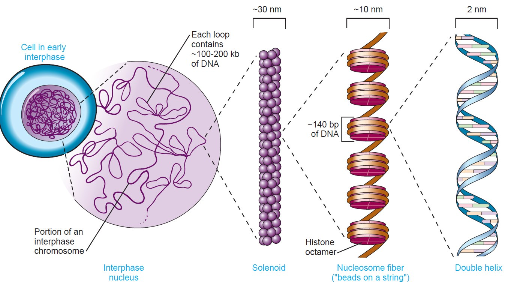
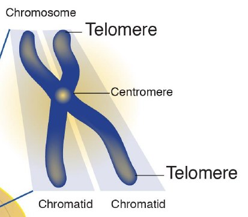
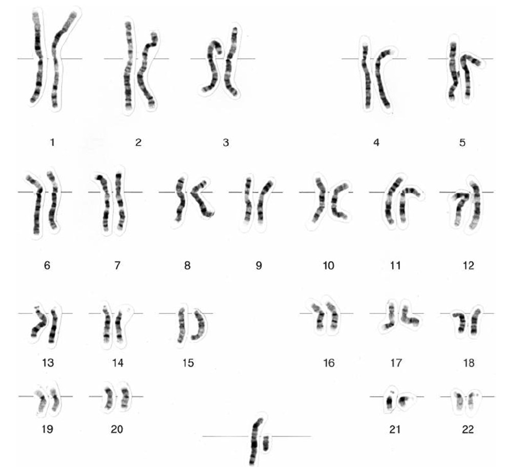
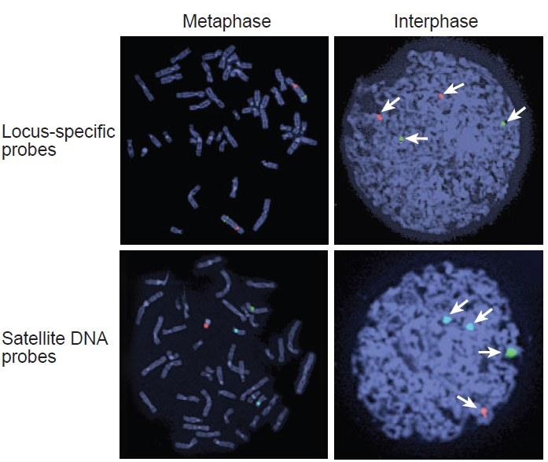
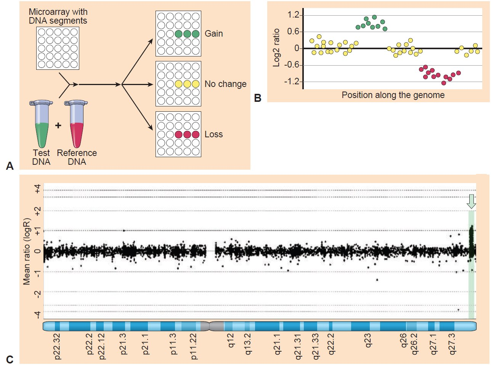
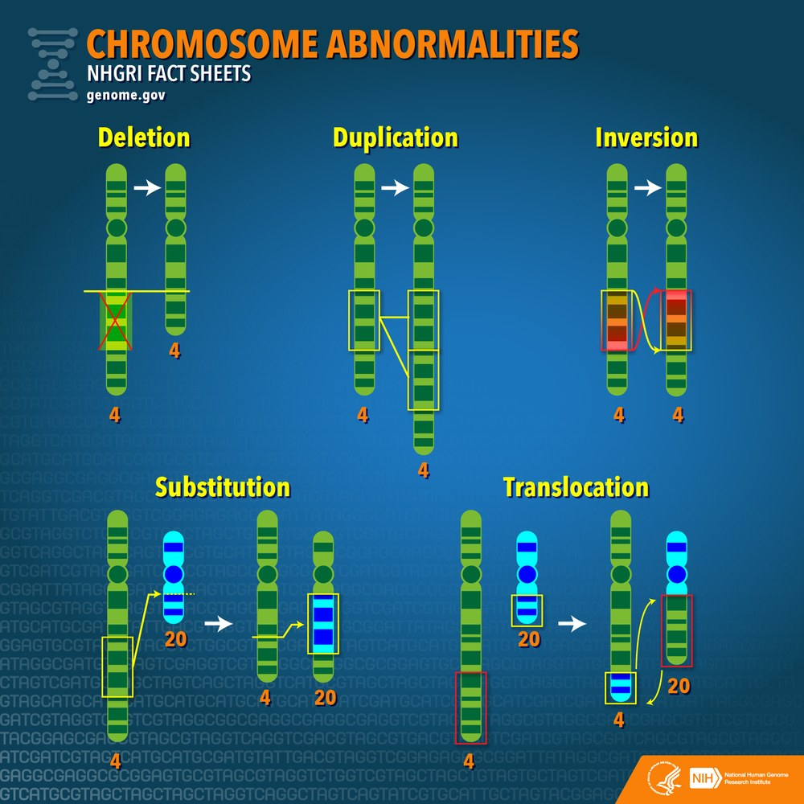
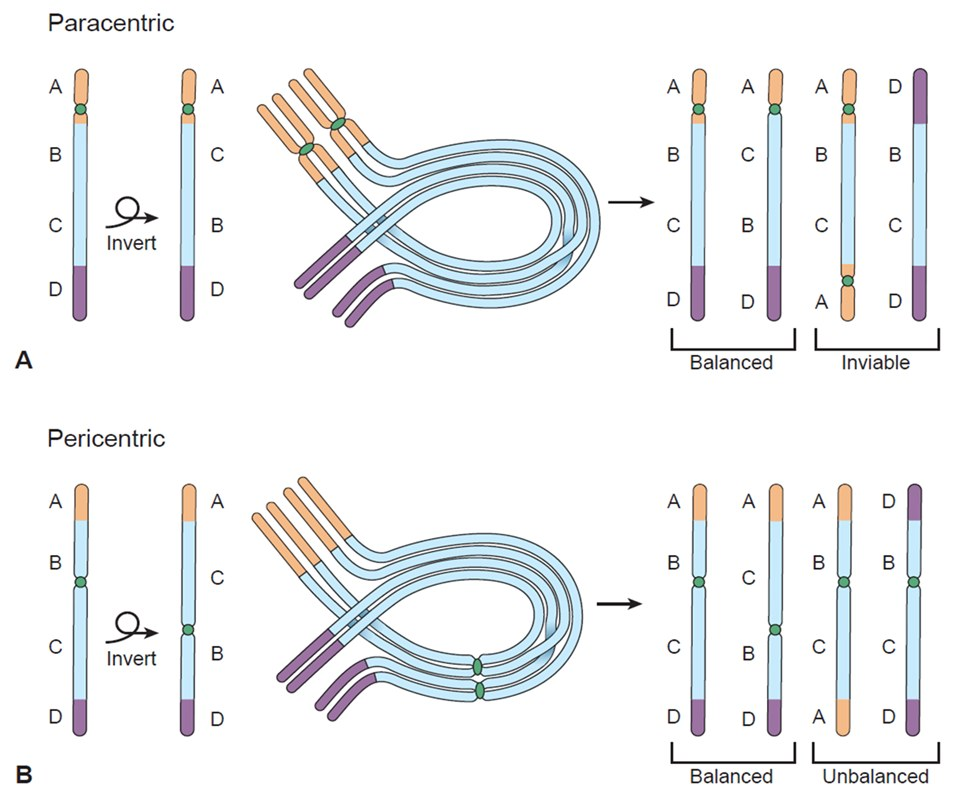
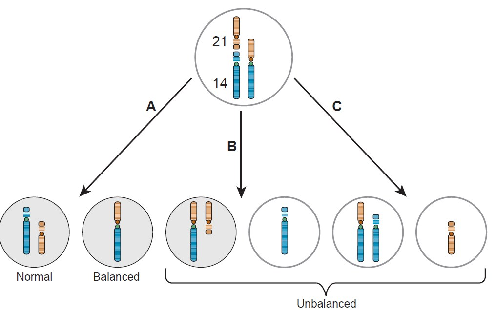
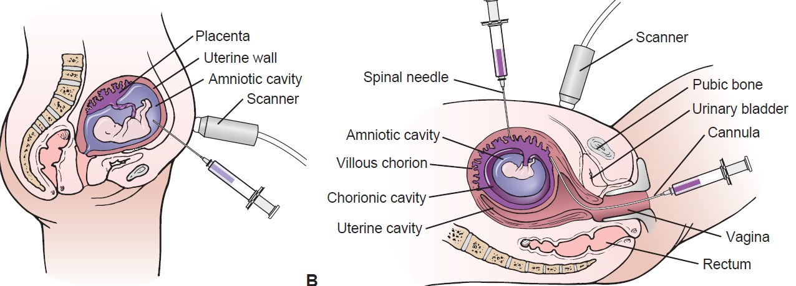
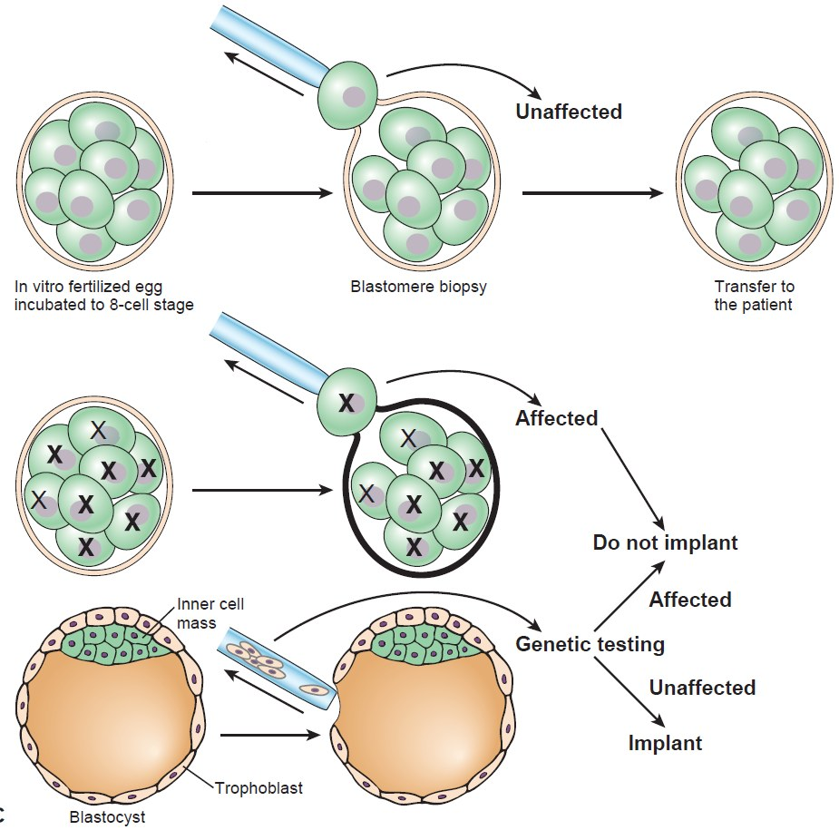

Plan your revision
Choose a 3, 5, 7 or 14-day study plan before reading.
Open study planPhase 6 full-content static app
This Phase 6 version adds the complete lecture and study-guide content into the website: full notes, procedures, tables, glossary expansion, exam questions, image gallery, offline support and deployment-ready files. No login, no backend and no database.
Recommended study flow
Start with planning, then learn the concepts, then revise actively. Each card links to the next best section so mobile users do not have to search around the page.
Choose a 3, 5, 7 or 14-day study plan before reading.
Open study planUse the embedded teaching video as a simple overview before reading the notes.
Watch videoRead the short module explanations before the detailed notes.
Start modulesUse the Complete Notes section for all detailed lecture content.
Read full notesStudy diagrams, slide images and visual chromosome tools.
View diagramsFlip flashcards, answer topic questions and then take mock exams.
Start recallUse your report and checklist to revise what is still difficult.
Open reportTeacher video lesson
This video has been placed immediately after the study flow so learners can first get a guided overview, then continue into modules, complete notes, diagrams, flashcards and exam practice. The video requires internet access.
Expandable notes
Each module has a simple explanation, exam focus, clinical connection, memory tip and quick self-test. Phase 6 also includes complete lecture notes below the module cards.
Phase 6 full integration
This section keeps the original learning tools, but also adds the detailed lecture information that was previously too summarized. Use it as the full class-note version before moving to flashcards, practice and exam mode.
By the end of the topic, you should be able to describe chromosome structure and organization, interpret basic karyotypes and chromosome nomenclature, understand mechanisms and consequences of chromosomal mutations, and connect chromosomal abnormalities with clinical syndromes.
| Year/period | Milestone | Why it matters |
|---|---|---|
| 1842 | Karl Wilhelm von Nägeli observed thread-like structures in plant nuclei. | Early observation of chromosomes before the term existed. |
| 1879 | Walther Flemming described mitosis and chromosome behaviour during cell division. | Linked chromosomes to cell division. |
| 1888 | Heinrich Wilhelm Waldeyer introduced the term chromosome. | The name comes from Greek words meaning colour and body. |
| 1902 | Sutton and Boveri proposed the chromosome theory of inheritance. | Connected chromosomes with Mendelian inheritance. |
| 1923 | Theophilus Painter incorrectly reported 48 human chromosomes. | Shows how early microscopy limitations affected chromosome counts. |
| 1956 | Tjio and Levan correctly determined the human chromosome number as 46. | Established the accepted normal human chromosome number. |
| 1959 | Lejeune and colleagues identified Down syndrome as trisomy 21. | First human chromosomal disorder identified. |
| 1960 | Philadelphia chromosome discovered in chronic myeloid leukemia. | First cancer-associated chromosomal abnormality. |
Chromosomes are formed by packaging DNA around histone proteins. The histone octamer contains two copies each of H2A, H2B, H3 and H4. DNA wrapped around this octamer forms the nucleosome core particle, often described as a bead on a string. Linker DNA connects nucleosomes, and histone H1 binds the linker DNA to stabilise higher-order chromatin folding.
Packaging progresses from DNA double helix to nucleosomes, chromatin fibres, looped domains and finally condensed metaphase chromosomes. This organisation allows long DNA molecules to fit into the nucleus while still allowing gene expression to be regulated.
Mitochondrial chromosome: mitochondrial DNA is about 16 kb long, encodes 37 genes, and is inherited maternally.
| Modification | Charge effect | Common examples | Main transcription effect |
|---|---|---|---|
| Methylation | No charge change | H3K4me3, H3K9me3, H3K27me3 | Activation or repression depending on the site. |
| Acetylation | Neutralises positive lysine charge | H3K9ac, H3K27ac | Usually opens chromatin and activates transcription. |
| Ubiquitination | Minimal charge effect | H2Bub1, H2Aub1 | H2Bub1 often activates; H2Aub1 often represses. |
| Phosphorylation | Adds negative charge | Histone tail phosphorylation | Influences chromatin structure, repair and chromosome condensation. |
DNA methylation: methyl groups are added to cytosine bases, commonly at CpG dinucleotides. 5-methylcytosine is a stable epigenetic mark that can be passed through cell division. DNA methylation often inhibits gene expression by recruiting methyl-CpG binding proteins and chromatin-modifying enzymes. Altered methylation patterns are common in cancer.
Chromosome notation starts with the chromosome number, followed by the arm, region and band. The short arm is p, the long arm is q, and band numbers increase as you move away from the centromere.
Decimals in cytogenetic location show more detailed banding levels that became possible after improved resolution.
Chromosome size is not directly proportional to the number of genes on that chromosome.
| Centromere position | Description | Examples |
|---|---|---|
| Metacentric | Arms are approximately equal. | 1, 3, 16, 19, 20. |
| Submetacentric | One arm is slightly longer. | 2, 4, 5, 6–12, 17, 18, X. |
| Acrocentric | One arm is much longer; satellites may appear on short arms. | 13, 14, 15, 21, 22; Y is also considered acrocentric but lacks satellites. |
An inactive X chromosome may be visible as a Barr body or sex chromatin. The number of Barr bodies is usually the number of X chromosomes minus one.
The distal long arm of the Y chromosome contains a large heterochromatic region that can sometimes be detected as a fluorescent Y-body or Y-chromatin.
| Technique | Principle | Main application |
|---|---|---|
| Karyotyping | Banding of metaphase chromosomes. | Aneuploidy and large rearrangements. |
| FISH | Fluorescent DNA probe hybridisation. | Specific deletions, duplications, translocations and chromosome counts. |
| Comparative genomic hybridisation | Patient DNA compared with reference DNA. | Genome-wide copy number gains and losses. |
| MLPA | Multiplex ligation-dependent probe amplification; PCR-based dosage testing. | Small exon-level deletions and duplications. |
| CMA-SNP array | Hybridisation-based genotyping using SNP probes. | CNVs, uniparental disomy, loss of heterozygosity and homozygosity regions. |
| Whole-genome sequencing | Sequence reads aligned to reference genome. | Aneuploidy, structural rearrangements and breakpoints when read depth or split reads are informative. |
The period between two mitoses is interphase, which includes G1, S and G2. The S phase is the programmed DNA synthesis phase. Mitosis progresses through prophase, prometaphase, metaphase, anaphase and telophase. Karyotyping uses metaphase because chromosomes are maximally condensed and clearly visible.
Fragile sites are non-staining gaps or breaks that indicate regional genomic instability. Fragile X syndrome is linked to a fragile site near the end of the X chromosome long arm, involving the FMR1 gene at Xq27.3. A CGG repeat expansion greater than 200 can silence the gene.
Numerical abnormalities include aneuploidy and polyploidy. Aneuploidy is gain or loss of individual chromosomes, while polyploidy is extra whole sets of chromosomes. Nondisjunction during meiosis or mitosis is a major mechanism.
| Syndrome | Karyotype / region | Important features |
|---|---|---|
| Down syndrome | 47,XX/XY,+21 | Intellectual disability, flat facial profile, short fingers. May result from nondisjunction or translocation. |
| Patau syndrome | 47,XX/XY,+13 | Microcephaly, cleft lip/palate, postaxial polydactyly, cardiac defects, deafness and holoprosencephaly. |
| Edwards syndrome | 47,XX/XY,+18 | Severe developmental abnormalities and high early mortality. |
| Turner syndrome | 45,X | Short stature, underdeveloped ovaries, lack of puberty-related sexual development, heart/kidney abnormalities, cystic neck hygromas and infertility. |
| Klinefelter syndrome | 47,XXY or variants such as XXYY | Tall eunuchoid body proportions, small testes, azoospermia, sterility, gynaecomastia and increased breast cancer risk compared with 46,XY males. |
| Jacobs syndrome | 47,XYY | Often taller than average; many are phenotypically normal but some may have cognitive or behavioural differences. |
| Complete androgen insensitivity syndrome | 46,XY | Female body contours, breast development, absent axillary hair and sparse pubic hair despite XY karyotype. |
Structural abnormalities include deletion, duplication, inversion, insertion, translocation, isochromosome formation, dicentric chromosomes and marker chromosomes. Consequences depend on whether genetic material is lost or gained, whether genes are disrupted and whether dosage-sensitive genes are affected.
Transposable elements can contribute to structural abnormalities by moving or copying DNA sequences.
| Class | Mechanism | Examples / enzymes |
|---|---|---|
| Class I retrotransposons | Copy and paste through an RNA intermediate; RNA is reverse-transcribed back into DNA. | LINEs, SINEs such as Alu, LTR retrotransposons; reverse transcriptase and integrase are important. |
| Class II DNA transposons | Cut and paste directly as DNA. | Transposase cuts and reinserts DNA. |
Alu elements are about 300 bp long, occur in more than 1 million copies and make up at least 10% of human DNA. LINE-1 elements may be up to 6 kb and account for nearly 20% of the genome. GC-rich regions tend to be enriched in Alu elements, while LINE sequences are common in AT-rich regions.
| Condition | Chromosomal change | Core points |
|---|---|---|
| Cri-du-chat syndrome | Deletion of part of chromosome 5p | Developmental/cognitive problems and characteristic features. |
| Williams syndrome | Deletion at 7q11.23 involving about 26 genes | Neurodevelopmental disorder. |
| Prader-Willi syndrome | Paternal 15q11-q13 deletion | Developmental delay, low muscle tone, obesity tendency, hypogonadism, small hands/feet and short stature. |
| Angelman syndrome | Maternal 15q11-q13 deletion | Developmental delay, happy disposition and movement discoordination. |
| Charcot-Marie-Tooth disease | Duplication of 17p12 | Progressive neurological disorder affecting nerves to feet/legs and hands/arms. |
Prader-Willi and Angelman syndromes show why parent-of-origin matters: the same deleted region can produce different disease because of genomic imprinting.
Inversion: a segment breaks and reattaches in reverse orientation. A pericentric inversion includes the centromere, while a paracentric inversion does not. Many inversions do not affect phenotype, but some can cause disease or reproductive risk. Severe haemophilia A may involve inversions, and inverted duplications can be associated with spinal muscular atrophy involving 5q13.
Translocation: a chromosome segment moves to another chromosome. Reciprocal translocations exchange material between non-homologous chromosomes. Nonreciprocal translocation may occur as insertion. The Philadelphia chromosome t(9;22) creates BCR-ABL and is associated with chronic myeloid leukemia. Burkitt lymphoma is linked to t(8;14) with MYC overexpression.
Robertsonian translocation: long arms of non-homologous acrocentric chromosomes fuse near their centromeres. A female carrier may be written 45,XX,der(14;21)(q10;q10). Robertsonian translocation involving chromosome 21 can cause familial Down syndrome; unbalanced offspring risk is higher for carrier mothers than carrier fathers.
Mosaicism means two or more different chromosome complements exist within one individual. It is commonly caused by nondisjunction in an early postzygotic mitotic division. For example, a zygote with trisomy 21 may lose the extra chromosome in some cells and develop as a 46/47,+21 mosaic.
Clinical effect depends on timing of the event, chromosome involved, proportion of abnormal cells and tissues affected. Mosaic Down syndrome or mosaic Turner syndrome may be less severe than non-mosaic forms.
When telomeres become critically short, cells may enter replicative senescence or undergo apoptosis. Short telomeres limit tissue renewal and may contribute to aging features such as weakened immune function, organ dysfunction and hair greying. Premature aging diseases such as Werner syndrome can involve telomere-related problems.
Short telomeres can suppress tumour formation by limiting cell proliferation, but critically short telomeres can also create genomic instability through end-to-end fusions, DNA damage and mutations. Many cancers reactivate telomerase, maintaining telomere length and supporting unlimited division.
Prenatal diagnosis helps determine fetal health, plan pregnancy management, prepare for birth complications, plan neonatal care, decide whether to continue pregnancy and identify issues that may affect future pregnancies.
| Test/method | What it detects | Typical timing / note |
|---|---|---|
| Ultrasonography | Structural defects and nuchal translucency marker. | Used throughout pregnancy; nuchal translucency is first-trimester screening. |
| NIPT / cell-free fetal DNA | Trisomies 21, 18, 13, sex chromosome disorders and fetal sex. | Screening test commonly from about 10 weeks. |
| Chorionic villus sampling | Chromosomal and genetic disorders using placental tissue. | Diagnostic test usually around 10–13 weeks. |
| Amniocentesis | Chromosomal/genetic disorders, neural tube defects and infections. | Diagnostic test usually around 15–20 weeks. |
| Maternal serum alpha-fetoprotein | Increased in neural tube defects; decreased in Down syndrome. | Part of serum screening. |
| Maternal serum β-hCG | Increased in Down syndrome; decreased in Edwards syndrome. | Part of serum screening. |
| Maternal serum estriol | Decreased in Down and Edwards syndromes. | Part of serum screening. |
| Preimplantation genetic diagnosis / testing | Embryo genetic testing before implantation. | Used with assisted reproduction. |
Genetic counselling is important in chromosomal disorders because results can affect reproductive decisions, family testing and psychological wellbeing. Prenatal screening and diagnosis require informed consent, confidentiality and careful explanation of options. Cancer cytogenetic profiles may also influence prognosis and treatment planning.
| Lecture/study-guide area | Website location | Status |
|---|---|---|
| Objectives and basic terminology | Learn modules + Complete Notes 1–3 + Glossary | Included |
| Historical timeline | Complete Notes 2 | Added in Phase 6 |
| Chromosome composition, H1, nucleosomes and mitochondrial chromosome | Complete Notes 4 | Added in Phase 6 |
| Histone modifications and DNA methylation | Complete Notes 5 + Learn modules | Expanded in Phase 6 |
| ISCN-style nomenclature examples | Complete Notes 6 + Notation decoder | Included |
| Karyotype, ideogram and chromosome centromere types | Complete Notes 7 + Visual tools | Included |
| Barr body and Y-chromatin | Complete Notes 8 | Added in Phase 6 |
| Karyotyping, FISH, CGH, MLPA, SNP array and WGS | Complete Notes 9 + Learn modules | Expanded in Phase 6 |
| Cell cycle and full banding procedure | Complete Notes 10–12 | Added in Phase 6 |
| Clinical indications for chromosome analysis | Complete Notes 13 | Added in Phase 6 |
| Numerical abnormalities and syndromes | Complete Notes 14–15 + Syndrome comparison + Exam mode | Expanded in Phase 6 |
| Structural abnormalities, transposable elements, deletions, duplications, inversions, translocations and mosaicism | Complete Notes 16–20 + Diagrams + Image Gallery | Expanded in Phase 6 |
| Telomeres, aging and cancer | Complete Notes 21 + Learn modules | Included |
| Prenatal diagnostics, maternal serum markers, PGD/PGT and ethics | Complete Notes 22–23 + Timeline + Report | Expanded in Phase 6 |
Flashcards
Click the card to flip it. Mark hard cards so you can revisit them later.
Diagram lab
Choose a diagram and read the explanation beside it.
Diagram
New image gallery
This section adds images from the uploaded lecture slides and curated web image references for chromosome structure, chromatin packaging, karyotyping, FISH, structural abnormalities and prenatal testing. Slide images are stored locally in the project; web reference images load online and include source links.
These are available inside the folder and can still display when the site is used offline.

Shows DNA folding into nucleosomes, chromatin fibres and chromosomes. Use it when studying nucleosome structure and histone packaging.

Labels chromatids, telomeres, centromere, p arm and q arm for quick revision.

Useful for remembering chromosome arrangement, autosomes and sex chromosomes.

Shows fluorescence signals on chromosomes and nuclei to support the FISH topic.

Shows how patient and control DNA signals reveal gains or losses across the genome.

Summarises deletion, duplication, inversion and translocation patterns.

Helps distinguish paracentric and pericentric inversion outcomes during meiosis.

Shows possible gametes and Down syndrome risk in rob(14;21) carriers.

Supports the CVS/amniocentesis and prenatal testing discussion.

Illustrates embryo biopsy and genetic testing before implantation.
These were selected from educational chromosome resources and Wikimedia/NHGRI pages. They need internet access when the local site is opened.

A clear external diagram of chromosome packaging from DNA to condensed chromosome.
Open source pageImage could not load offline. Use the source page link when connected.

Shows histone octamers, DNA wrapping, nucleosomes and chromatin fibre formation.
Open source pageImage could not load offline. Use the source page link when connected.

A reference karyotype for comparing normal 46,XY arrangement with abnormal examples.
Open source pageImage could not load offline. Use the source page link when connected.

A karyotype example showing 47,XY,+21 for Down syndrome revision.
Open source pageImage could not load offline. Use the source page link when connected.

A simple diagram showing labelled probes binding to target DNA in the FISH method.
Open source pageImage could not load offline. Use the source page link when connected.

A learner-friendly FISH fact-sheet image showing probe labelling and hybridisation.
Open source pageImage could not load offline. Use the source page link when connected.
The lecture-slide images are included for your private study use from the file you uploaded. The web images are linked with
source pages and attribution notes in IMAGE_CREDITS.md. If you later publish this website publicly, review the
credit file and keep the source links visible.
Phase 4 visual tools
Use these tools to move from memorising words to recognising chromosome patterns, karyotype notation, clinical syndromes and prenatal testing choices.
Karyotype explorer
Notation decoder
Syndrome comparison
Prenatal testing timeline
Topic practice
Use topic practice to strengthen weak areas before taking timed exam mode.
Topic
Phase 3 exam mode retained
Choose the number of questions, start the test, answer without notes, then review your score, missed questions and weak topics. Results are saved only in this browser.
Result
Glossary
Use this to revise definitions quickly before reading or answering questions.
Revision checklist
Tick each outcome when you can explain it without looking at your notes.
Phase 5 study planner
Choose how many days you have. The app will spread the chromosomal structure and disorders topics into a realistic plan.
Revision report
This report is generated from your local browser progress only. Nothing is uploaded anywhere.
Build roadmap
Homepage, modules, glossary, quick quiz, checklist and local progress.
Flashcards, diagrams, expandable notes, topic practice and improved study flow.
Timed mock test, randomized questions, score review, saved history and weak-topic tracking.
Karyotype explorer, notation decoder, syndrome comparison and prenatal testing timeline.
Offline support, installable PWA files, study planner, revision report, progress backup and deployment guide.